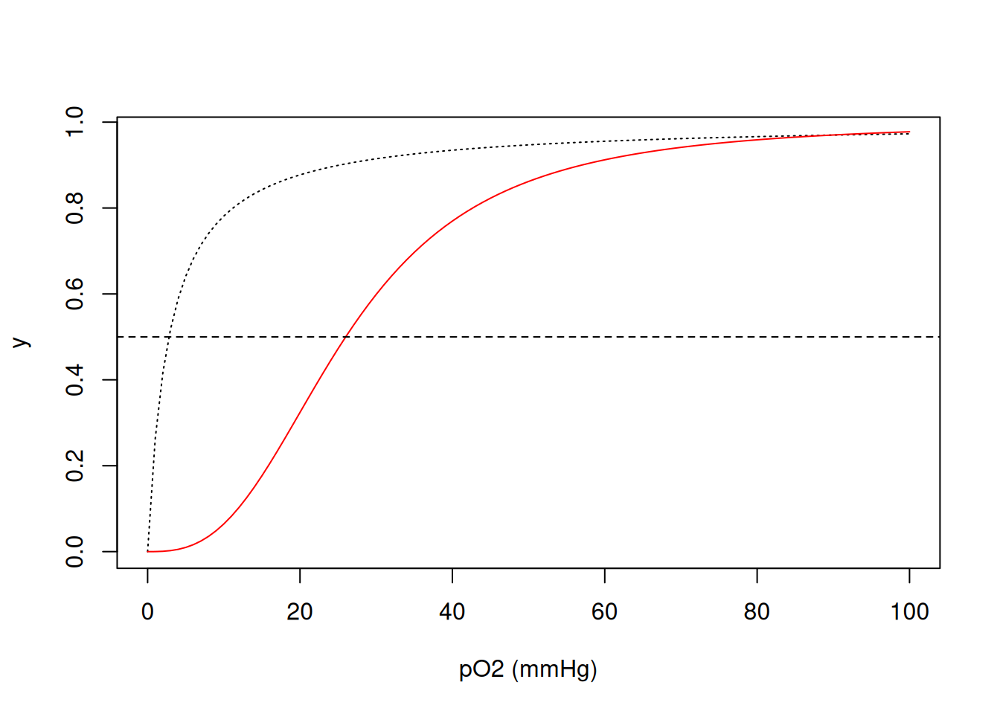
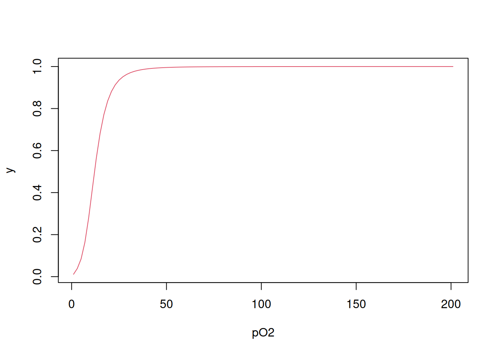
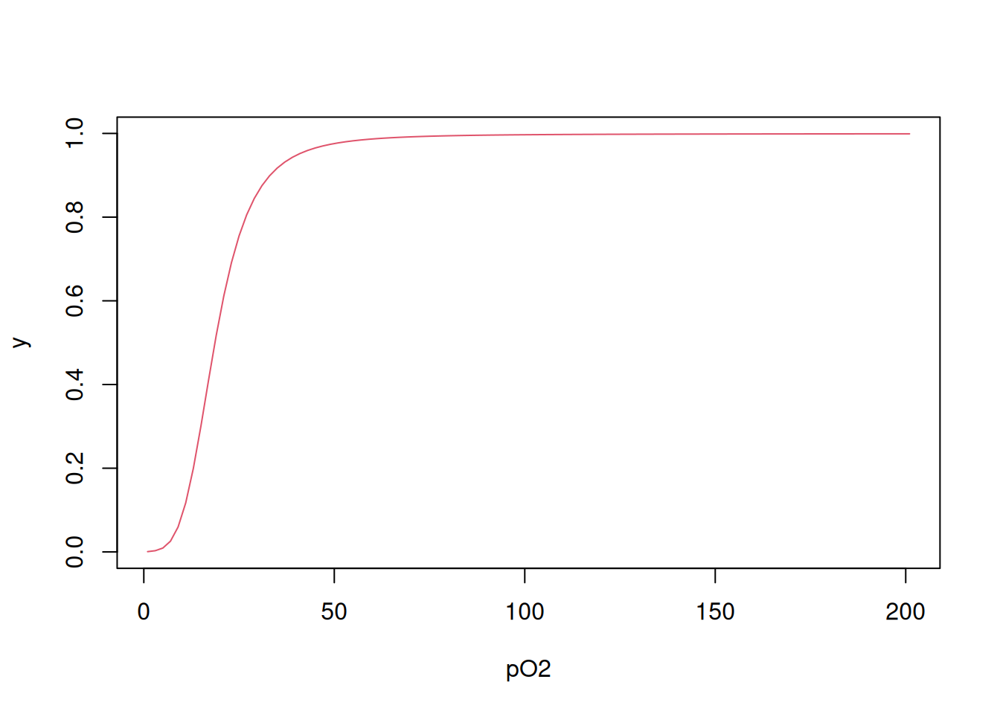
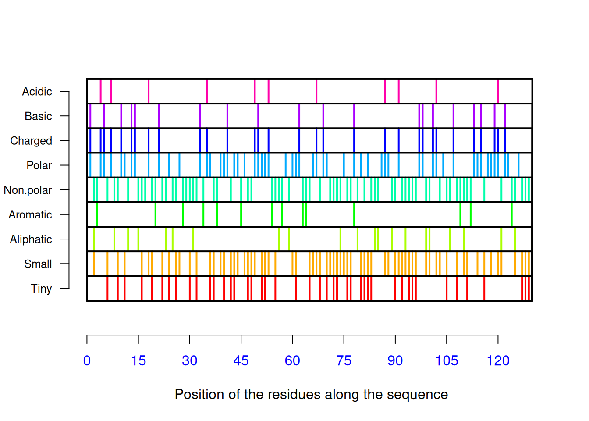

seq <- "MKWVTFISLLFLFSSAYSRGVFRRDAHKSEVAHRFKDLGEENFKALVLIAFAQYLQQCPFEDHVKLVNEV
TEFAKTCVADESAENCDKSLHTLFGDKLCTVATLRETYGEMADCCAKQEPERNECFLQHKDDNPNLPRLV
RPEVDVMCTAFHDNEETFLKKYLYEIARRHPYFYAPELLFFAKRYKAAFTECCQAADKAACLLPKLDELR
DEGKASSAKQRLKCASLQKFGERAFKAWAVARLSQRFPKAEFAEVSKLVTDLTKVHTECCHGDLLECADD
RADLAKYICENQDSISSKLKECCEKPLLEKSHCIAEVENDEMPADLPSLAADFVESKDVCKNYAEAKDVF
LGMFLYEYARRHPDYSVVLLLRLAKTYETTLEKCCAAADPHECYAKVFDEFKPLVEEPQNLIKQNCELFE
QLGEYKFQNALLVRYTKKVPQVSTPTLVEVSRNLGKVGSKCCKHPEAKRMPCAEDYLSVVLNQLCVLHEK
TPVSDRVTKCCTESLVNRRPCFSALEVDETYVPKEFNAETFTFHADICTLSEKERQIKKQTALVELVKHK
PKATKEQLKAVMDDFAAFVEKCCKADDKETCFAEEGKKLVAASQAALGL"Proteínas
Composição de aminoácidos
Proteínas constituem biopolímeros formados por 20 aminoácidos. Dessa forma pode-se avaliar facilmente a composição de qualquer proteína disponível em banco de dados, como o PDB visto no capítulo de Aminoácidos. Tomando-se a albumina de soro humano como exemplo, código AAA98797 do National Center for Biotechnology Information, é possível contabilizar os 20 tipos de aminoácidos que compõe sua sequência. Para isto basta considerar a sequência FASTA como uma string, e extrair a quantidade de cada letra, utilizando-se a biblioteca stringr, como segue.
Primeiro, obtém-se a sequência FASTA da albumina de soro.
Pode-se observar que há espaços vazios, que podem ser omitidos por razões estéticas ou não, já que o pacote stringr não os contabilizará, contrariamente a pacotes mais específicos para sequências biológicas, como o seqinr visto anteriormente. Mas se desejar omitir esses espaços, basta executar o código abaixo.
seq <- seq[seq != "\n"]
seq # operação booleana != significa "não"A seguir, obtém-se o quantitativo de uma letra específica da sequência.
library(stringr)
aa <- str_count(seq, pattern = "A")
aa[1] 63 Veja que o comando
str_count contabiliza apenas a letra “A” na sequência. Dessa forma, é possível obter todos os 20 aminoácidos, repetindo-se esse comando.library(stringr)
ala <- str_count(seq, pattern = "A")
arg <- str_count(seq, pattern = "R")
asn <- str_count(seq, pattern = "N")
asp <- str_count(seq, pattern = "D")
cys <- str_count(seq, pattern = "C")
glu <- str_count(seq, pattern = "E")
gln <- str_count(seq, pattern = "Q")
gly <- str_count(seq, pattern = "G")
his <- str_count(seq, pattern = "H")
ile <- str_count(seq, pattern = "I")
leu <- str_count(seq, pattern = "L")
lys <- str_count(seq, pattern = "K")
met <- str_count(seq, pattern = "M")
phe <- str_count(seq, pattern = "F")
pro <- str_count(seq, pattern = "P")
ser <- str_count(seq, pattern = "S")
thr <- str_count(seq, pattern = "T")
trp <- str_count(seq, pattern = "W")
tyr <- str_count(seq, pattern = "Y")
val <- str_count(seq, pattern = "V")E, para visualizar o resultado numa tabela:
aa_3abrev <- c("Ala", "Arg", "Asn", "Asp", "Cys", "Glu",
"Gln", "Gly", "His", "Ile", "Leu", "Lys", "Met",
"Phe", "Pro", "Ser", "Thr", "Trp", "Tyr", "Val")
aa_quant <- c(ala, arg, asn, asp, cys, glu, gln, gly,
his, ile, leu, lys, met, phe, pro, ser, thr, trp,
tyr, val) # vetor com o quantitativo de aminoácidos da proteína
aa_seq <- data.frame(aa_3abrev, aa_quant) # dataframe com os resultados
colnames(aa_seq) <- c("Tipo", "Qtde") # renomear as colunas
# Composição de aminoácidos em albumina de soro
# humano
aa_seq # apresenta a tabela Tipo Qtde
1 Ala 63
2 Arg 27
3 Asn 17
4 Asp 36
5 Cys 35
6 Glu 62
7 Gln 20
8 Gly 13
9 His 16
10 Ile 9
11 Leu 64
12 Lys 60
13 Met 7
14 Phe 35
15 Pro 24
16 Ser 28
17 Thr 29
18 Trp 2
19 Tyr 19
20 Val 43 O ‘R’ possui alguns comandos para a geração estética de tabelas, entre os quais os incluídos no pacote ‘knitr’, como segue:
library(knitr) # para gerar a tabela
knitr::kable(aa_seq, caption = "Composição de aminoácidos em albumina
# de soro humano.", "pipe") # tabela| Tipo | Qtde |
|---|---|
| Ala | 63 |
| Arg | 27 |
| Asn | 17 |
| Asp | 36 |
| Cys | 35 |
| Glu | 62 |
| Gln | 20 |
| Gly | 13 |
| His | 16 |
| Ile | 9 |
| Leu | 64 |
| Lys | 60 |
| Met | 7 |
| Phe | 35 |
| Pro | 24 |
| Ser | 28 |
| Thr | 29 |
| Trp | 2 |
| Tyr | 19 |
| Val | 43 |
Observe que, à despeito do resultado obtido, houve certo trabalho em se obter a composição da albumina, a partir das 20 linhas modificadas para cada aminoácido. Uma alternativa mais prática consiste em considerar um loop que execute a extração da informação desejada para um vetor contendo a abreviação de uma letra para cada aminoácido.
aa_1abrev <- c("A", "R", "N", "D", "C", "E", "Q", "G", "H", "I", "L", "K", "M",
"F", "P", "S", "T", "W", "Y", "V")
for (i in aa_1abrev) {
aa_quant2 <- str_count(seq, pattern = aa_1abrev)
return(aa_quant2) # sintaxe opcional para função com apenas uma saída
}
aa_seq <- data.frame(aa_3abrev, aa_quant2) # dataframe com os resultados
colnames(aa_seq) <- c("Tipo", "Qtde") # renomear as colunas
knitr::kable(aa_seq, caption = "Composição de aminoácidos em albumina de soro
humano (uso de loop).", "pipe") # tabela| Tipo | Qtde |
|---|---|
| Ala | 63 |
| Arg | 27 |
| Asn | 17 |
| Asp | 36 |
| Cys | 35 |
| Glu | 62 |
| Gln | 20 |
| Gly | 13 |
| His | 16 |
| Ile | 9 |
| Leu | 64 |
| Lys | 60 |
| Met | 7 |
| Phe | 35 |
| Pro | 24 |
| Ser | 28 |
| Thr | 29 |
| Trp | 2 |
| Tyr | 19 |
| Val | 43 |
Dessa forma obtém-se o mesmo resultado, mas com menor consumo de memória e maior velocidade de processamento, características em qualquer lógica de programação. Apesar do loop exemplificar uma automação, a função
str_count retém em si um loop interno, já que aplica uma função de contagem de elementos a uma sequência, a partir de um padrão pré-definido (o vetor aa_1abrev, no caso). Dessa forma, pode-se simplificar ainda mais o script, não necessitando do loop externo.str_count(seq, pattern = aa_1abrev) [1] 63 27 17 36 35 62 20 13 16 9 64 60 7 35 24 28 29 2 19 43 Diversas funções do R exibem esse loop interno, e que pode ser aplicado em vetores, listas, matrizes e dataframes (planilha de dados). As mais simples envolvem a aplicação de uma função pré-programada do R a um vetor, por ex:
y <- c(1, 2, 4, 8, 16, 32)
mean(y)[1] 10.5sum(y)[1] 63 Outra vetorização frequente decorre da aplicação de uma função de usuário a vetor, reduzindo a necessidade de repetição de comandos, como no exemplo abaixo:
# Tamanho médio estimado de uma proteína a partir do no. de resíduos de
# aminoácidos
prot.tamanho <- function(x) {
MM <- x * 110 # 'x' representa o número de aminoácidos da proteína
return(MM)
}
prot.tamanho(575) # no. de resíduos de aminoácidos de albumina humana[1] 63250 Outra forma de vetorização envolve a família de funções
apply, composta pelos comandos apply, sapply, tapply, lapply, e mapply. Embora possuam processamento mais rápido que funções de loop externo para uso de matrizes muito complexas, cada qual é voltado a um objeto distinto ou situação específica do R (retorno de lista, vetor ou matriz), permite o uso de subset (subconjuntos de dados), utiliza funções do R ou funções previamente definidas pelo usuário, e roda em apenas uma linha de comando. Essas vantagens contrapõe-se ao uso de loop for aplicado para vetores. Contudo, a vetorização opera muito bem quando se deseja aplicar ou mapear uma função a um vetor/matriz/lista. Quando, por outro lado, se deseja aplicar uma função cujo resultado dependa de mais de um vetor/matriz/lista, o loop for torna-se indispensável, como na titulação de ácidos fracos do capítulo de Aminoácidos. Seja qual for o método empregado (e aí vale destacar as chamadas boas práticas de programação na construção de scripts 1), é possível construir uma composição mais geral para o conjunto de resíduos da proteína. Assim, podemos obter qualquer relação quantitativa a partir da sequência, já que a estamos tratando como uma string. Exemplificando, uma tabela contendo a classe de cada aminoácido que compõe a sequência.
aa_ac <- aa_seq[4, 2] + aa_seq[6, 2] # AA ácicos
aa_bas <- aa_seq[2, 2] + aa_seq[9, 2] + aa_seq[12, 2] # AA básicos
aa_arom <- aa_seq[14, 2] + aa_seq[18, 2] + aa_seq[19, 2] # AA aromáticos
aa_alif <- aa_seq[10, 2] + aa_seq[11, 2] + aa_seq[15, 2] + aa_seq[1, 2] +
aa_seq[20, 2] # AA alifáticos
aa_pol <- aa_seq[3, 2] + aa_seq[5, 2] + aa_seq[7, 2] + aa_seq[8, 2] +
aa_seq[13, 2] + aa_seq[16, 2] + aa_seq[17, 2] ## AA polares neutros Agora, ao invés de se construir uma tabela com a contagem desses grupos, façamos o percentual dos mesmos, para uma visão mais geral da sequência.
aa_tot <- str_count(seq, pattern = "") # comprimento da sequência
class_perc <- round(c(aa_ac, aa_bas, aa_arom, aa_alif, aa_pol) / aa_tot * 100)E agora, sim, constroi-se a tabela.
aa_class <- c("ácido", "básico", "aromático", "alifático", "polar")
aa_perc <- data.frame(aa_class, class_perc) # dataframe com os resultados
colnames(aa_perc) <- c("Classe", "%") # renomear as colunas
knitr::kable(aa_perc, caption = "Distribuição de classes de aminoácidos
em albumina humana.", "pipe") # tabela| Classe | % |
|---|---|
| ácido | 16 |
| básico | 17 |
| aromático | 9 |
| alifático | 33 |
| polar | 24 |
Percebe-se pela tabela acima que a distribuição de classes de resíduos de aminoácidos na albumina é razoavelmente homogênea, o que contribui para sua função anfotérica de transporte para compostos polares (ex:cálcio) e apolares (ex: colesterol, ácidos graxos).
Tabela de Purificação de Proteínas & R como planilha eletrônica
Não obstante a facilidade com que podemos elaborar/editar planilhas eletrônicas convencionais (spreadsheet; ex: MS Excel, Libreoffice Calc, Gnumeric, etc), o ‘R’ também permite trabalhar-se com planilhas. Ainda que menos intuitivo como as mencionadas, a scriptagem no R permite a elaboração/edição de planilhas de alta complexidade, dada a natureza da programação estatística que envolve a suite.
Para exemplificar a construção de uma planilha simples, tomemos como exemplo uma Tabela de Purificação de Proteínas, usualmente utilizada em Biotecnologia e áreas afins. A forma mais simples de construção de uma planilha envolve 1) a elaboração individual de vetores, e 2) a união dos vetores em uma planilha.
Os procedimentos para purificação (ou isolamento, fracionamento) proteica envolvem técnicas como tratamento químico (precipitação por sulfato de amônio, acetona), tratamento ácido, tratamento térmico, diálise, cromatografia (filtração molecular, troca-iônica, afinidade, fase reversa), entre outros. Para aferição do grau de pureza da amostra obtida utilizam-se normalmente a eletroforese simples, focalização isoelétrica, eletroforese 2D, uso de anticorpos monoclonais, e ensaios de atividade específicos, dentre vários.
Para a tabela de purificação são exigidos somente os vetores de massa de amostra e de atividade enzimática da amostra, obtidos em cada etapa de purificação. Uma planilha simples poderia ser construida como:
Para exemplificar a construção de uma planilha simples, tomemos como exemplo uma Tabela de Purificação de Proteínas, usualmente utilizada em Biotecnologia e áreas afins. A forma mais simples de construção de uma planilha envolve 1) a elaboração individual de vetores, e 2) a união dos vetores em uma planilha.
Os procedimentos para purificação (ou isolamento, fracionamento) proteica envolvem técnicas como tratamento químico (precipitação por sulfato de amônio, acetona), tratamento ácido, tratamento térmico, diálise, cromatografia (filtração molecular, troca-iônica, afinidade, fase reversa), entre outros. Para aferição do grau de pureza da amostra obtida utilizam-se normalmente a eletroforese simples, focalização isoelétrica, eletroforese 2D, uso de anticorpos monoclonais, e ensaios de atividade específicos, dentre vários.
Para a tabela de purificação são exigidos somente os vetores de massa de amostra e de atividade enzimática da amostra, obtidos em cada etapa de purificação. Uma planilha simples poderia ser construida como:
# Elaboração de planilha simples de purificação de enzima
# (cada elemento do vetor representa uma etapa de purificação)
# 1. Definição dos vetores principais:
prot.total <- c(6344, 302, 145, 34, 10, 3.8) # proteína, mg
ativ.tot <- c(200, 122, 106, 70, 53, 24) * 1000 # atividade, U
# 2. Construção da planilha:
purif.plan <- data.frame(prot.total, ativ.tot)
purif.plan prot.total ativ.tot
1 6344.0 200000
2 302.0 122000
3 145.0 106000
4 34.0 70000
5 10.0 53000
6 3.8 24000 A planilha construida compõe agora um ‘dataset’ do R. Há outras formas de construção simples, também, como o uso da função ‘cbind’ (pra união de colunas) ou ‘rbind’ (união de linhas; rows):
purif.plan2 <- cbind(prot.total, ativ.tot)
purif.plan2 prot.total ativ.tot
[1,] 6344.0 200000
[2,] 302.0 122000
[3,] 145.0 106000
[4,] 34.0 70000
[5,] 10.0 53000
[6,] 3.8 24000 Seja qual for o procedimento, pode-se alterar os nomes das colunas, como segue:
# Edição de nome de colunas
colnames(purif.plan2) <- c("totalProt", "enzAtiv")
purif.plan2 totalProt enzAtiv
[1,] 6344.0 200000
[2,] 302.0 122000
[3,] 145.0 106000
[4,] 34.0 70000
[5,] 10.0 53000
[6,] 3.8 24000 Como numa planilha convencional, também é possível se criar novos vetores calculados a partir dos iniciais:
purif.plan3 <- data.frame(prot.total, ativ.tot, ativ.tot / prot.total)
options(digits = 1) # opção para no. de casas decimais
colnames(purif.plan3) <- c("prot.total", "ativ.tot", "ativ.specif")
rownames(purif.plan3) <- c("extr.bruto", "NH4SO2", "acetona",
"Sephadex G-100", "DEAE-celulose", "C8-fase rev")
purif.plan3 prot.total ativ.tot ativ.specif
extr.bruto 6344 2e+05 32
NH4SO2 302 1e+05 404
acetona 145 1e+05 731
Sephadex G-100 34 7e+04 2059
DEAE-celulose 10 5e+04 5300
C8-fase rev 4 2e+04 6316 A planilha pode ser editada em seus valores, também, bastando pra isso atribuir um novo nome para que as modificações sejam salvas:
# Edição simples de planilha (alterações de valores e nomes de colunas)
purif.plan4 <- edit(purif.plan3) # ou data.entry( ) É claro, também, que se pode importar os dados de uma planilha já construida em outro programa. Exemplificando para uma planilha salva como CSV:
# Importação de dados de outra planilha (CSV):
# 1. Importação com nome da planilha desejada:
purif.plan5 <- read.table("planilha.csv", header = T, sep = ",")
# 2. Importação com tela de busca da planilha desejada:
purif.plan5 <- frame <- read.csv(file.choose()) Um grande número de operações pode ser conduzido em planilhas no ‘R’, tais como inserção, deleção, modificação, agregação (merge), filtragem, extração de subconjunto, operações matemáticas e cálculos estatísticos (média, desvio-padrão, etc). Pode-se também converter a planilha em uma tabela de visual mais completo, por uso da biblioteca ‘tibble’, parte de um conjunto de pacotes utilizado em ciência de dados denominado Tidyverse :
library(tibble)
purif.plan6 <- as_tibble(purif.plan3)
purif.plan6# A tibble: 6 × 3
prot.total ativ.tot ativ.specif
<dbl> <dbl> <dbl>
1 6344 200000 31.5
2 302 122000 404.
3 145 106000 731.
4 34 70000 2059.
5 10 53000 5300
6 3.8 24000 6316. O Tidyverse compõe um ecossistema de pacotes do ‘R’ que comungam da mesma filosofia, gramática e estrutura de dados. Entre esses pacotes inlcui-se o ‘tibble’ (tabelas), ‘ggplot2’ (gráficos de alta qualidade visual), e ‘dplyr’ (manipulação de dados). No que tange ao ‘dplyr’, é bastante flexível a criação e edição de planilhas, e que são convertidas a tabelas, tal como segue para o exemplo da purificação acima:
# Tabela de purificação de enzima com pacote 'dplyr':
library(dplyr)
purif.plan7 <- mutate(purif.plan, ativ.esp = ativ.tot / prot.total)
purif.plan7 prot.total ativ.tot ativ.esp
1 6344 2e+05 32
2 302 1e+05 404
3 145 1e+05 731
4 34 7e+04 2059
5 10 5e+04 5300
6 4 2e+04 6316 Observe que com o pacote ‘dplyr’ a inserção de uma nova coluna não requereu um novo vetor para nomes de colunas (‘colnames’). Além disso, a planilha final foi elaborada junto à gramática do pacote ‘tibble’ do Tidyverse. Essa facilidade também se extende para os processos de edição e filtragem da planilha, tal a extração de uma coluna modificada:
ativ.tot.kU <- transmute(purif.plan7, ativ.tot = ativ.tot / 1e3)
ativ.tot.kU # vetor de atividade específica em U x 10^3 ativ.tot
1 200
2 122
3 106
4 70
5 53
6 24 Dessa forma pode-se construir uma tabela completa de purificação, elencando-se, além da atividade específica, o nível de purificação (de quantas vezes a atividade específica aumentou em relação à da amostra inicial) e o rendimento obtido (de quantas vezes o teor da enzima alvo reduziu em relação à amostra inicial - atividade remanescente):
purif.plan8 <- mutate(purif.plan7,
purif = ativ.esp / ativ.esp[1], # nível de purificação
rend.perc = 100 * ativ.tot / ativ.tot[1]
) # rendimento percentual
# Convetendo à tabela...
library(knitr)
knitr::kable(purif.plan8, caption = "Tabela de purificação para uma enzima", "pipe")| prot.total | ativ.tot | ativ.esp | purif | rend.perc |
|---|---|---|---|---|
| 6344 | 2e+05 | 32 | 1 | 100 |
| 302 | 1e+05 | 404 | 13 | 61 |
| 145 | 1e+05 | 731 | 23 | 53 |
| 34 | 7e+04 | 2059 | 65 | 35 |
| 10 | 5e+04 | 5300 | 168 | 26 |
| 4 | 2e+04 | 6316 | 200 | 12 |
Adicionalmente, o ‘R’ possui alguns pacotes que agilizam a criação/edição de planilhas de modo interativo e mais próximo ao de uma planilha eletrônica convencional, dentre os quais destaca-se o pacote ‘DT’, uma biblioteca elaborada em JavaScript que produz uma planilha editável em HTML:
library(DT)
purif.plan9 <- as.data.frame(purif.plan8)
rownames(purif.plan9) <- c("extr.bruto", "NH4SO2", "acetona",
"Sephadex G-100", "DEAE-celulose",
"C8-fase rev") # converte a tabela de purificação
# em planilha para se utilizada pelo pacote DT
datatable(purif.plan9) %>% formatRound(1:5, 1) # colunas com 1 casa decimal Por tratar-se de saída em HTML interativo, o resultado do trecho de código precisa ser omitido para a correta compilação pelo ‘R’ (eval=FALSE, include=TRUE).
A biblioteca ‘DT’ permite, entre outros, reordenamento, filtragem, e mesmo edição dos valores, de modo interativo (basta clicar na célula desejada):
DT::datatable(purif.plan9, editable = "cell")Interação de oxigênio com mioglobina e hemoglobina
Tanto a mioglobina (PD 1MBO) como a hemoglobina humanas (PDB 6BB5) constituem proteínas de transporte do oxigênio molecular. A hemoglobina, de estrutura quaternária, o faz dos pulmões aos tecidos, enquanto que a mioglobina, terciária, o distribui entre esses. Suas curvas de saturação com oxigênio são bem conhecidas em livros-texto, cujo aprendizado pode agregar valor quando simuladas.
Dessa forma, pode-se considerar a ligação do O\(_{2}\) à mioglobina como uma fração de saturação y dada em função de sua meia satuação a 50% de pressão de O\(_{2}\) (constante de dissociação \(K_{50}\) de 2.8 mmHg).
\[ y=\frac{pO_2}{K_{50}+pO_2} \tag{1}\]
Por outro lado, o valor de \(K_{50}\) para a hemoglobina é de 26 mmHg, mas sua função exprime-se de forma diferente à da mioglobina:
\[ y=\frac{pO_2^{nH}} {K_{50}^{nH}+pO_2^{nH}} \tag{2}\]
Nessa Equação 2, nH representa o coeficiente de cooperatividade de Hill, que resume a energia distribuida entre as quatro constantes microscópicas de dissociação de O\(_{2}\) aos quatro centros porfirínicos da hemoglobina (grupos heme). Simulando ambas as curvas:
K50 <- 2.8
curve(x / (K50 + x),
xlim = c(0, 100),
xlab = "pO2 (mmHg)", ylab = "y", lty = "dotted"
)
K50 <- 26
nH <- 2.8
curve(x^nH / (K50^nH + x^nH),
xlim = c(0, 100),
xlab = "pO2 (mmHg)", ylab = "y", col = "red",
add = TRUE
) # "add" permite adicionar curvas ao gráfico
abline(0.5, 0, lty = 2) # acrescenta linha de base em meia saturação
Como mencionado no parágrafo anterior, aos quatro centros de ligação com oxigênio molecular reportam-se quatro constantes microscópicas de equilíbrio de dissociação, de K1 a K4. Simplificando o valor de pO\(_{2}\) para L, ligante, é possível também representar a ligação de O\(_{2}\) à hemoglobina pela equação de Adair (Pauling 1935):
\[ y=\frac{K1*L+2*K2*K1*L^2+3*K3*K2*K1*L^3+4*K4*K3*K2*K1*L^4} {4*(1+K1*L+2*K2*K1*L^2+3*K3*K2*K1*L^3+4*K4*K3*K2*K1*L^4)} \tag{3}\]
Ocorre que existe um efeito estatístico associado à interação em estudo, já que o O\(_{2}\) possui 4 sítios iniciais de interação à hemoglobina (Tyuma, Imai, e Shimizu 1973), valores que reduzem até a saturação dos 4 sítios. Dessa forma, é necessário contabilizar as constantes microscópicas Ki em razão desse comprometimento estatístico:
\[ Ki_{corr} = \frac{i}{N-1+i}*Ki \tag{4}\]
No R, isso pode ser auxiliado por um loop for:
K <- c(0.011, 0.016, 0.118, 0.400) # vetor de constantes microscópicas de
# dissociação de Hb para O2
L <- seq(1, 201, 2) # vetor de teores de O2
Kcorr <- c() # inicializa um vetor vazio para saída do vetor corrigido de Ki
N <- 4 # declara o número de sítios na Hb
for (i in 1:N) Kcorr[i] <- i / (N - i + 1) * K[i]
Kcorr # apresenta o vetor de valores de Ki corrigidos para o efeito estatístico[1] 0.003 0.011 0.177 1.600 Perceba que os valores para Ki corrigidos estão em proporção que segue a disponibilidade de sítios, de 4 vezes menor para o 1o. sítio (maior ligação), até 4 vezes maior para o 4o. sítio (menor ligação). Agora é possível aplicar-se a Equação 3 utilizando-se as constantes calculadas como segue:
numer <- K[1] * L + 2 * K[2] * K[1] * L^2 + 3 * K[3] * K[2] * K[1] * L^3 +
4 * K[4] * K[3] * K[2] * K[1] * L^4
denom <- 1 + numer
y <- numer / denom
plot(L, y, xlab = "pO2", type = "l", col = 2)
Por fim, também é possível obter a curva de ligação utilizando-se uma variação de loop for na qual a Equação 3 é produzida por iteração, como segue (Bloomfield 2009):
# Cálculo de y em cada L
Yi <- function(L, Kcorr) {
N <- length(Kcorr)
conc <- c()
conc[1] <- L * Kcorr[1]
for (i in 2:N) conc[i] <- conc[i - 1] * L * Kcorr[i]
numer2 <- sum((1:N) * conc) / N
denom2 <- 1 + sum(conc)
return(numer2 / denom2)
}
# Cálculo de y para o vetor de L
Y <- function(L, Kcorr) {
YY <- c()
for (j in 1:length(L)) YY[j] <- Yi(L[j], Kcorr)
return(YY)
}
# Aplicação da função de y para L e gráfico
Yfinal <- Y(L, Kcorr)
plot(L, Yfinal, type = "l", col = 2, xlab = "pO2", ylab = "y")
Observe que há mínimas diferenças entre as curvas obtidas pelos distintos procedimentos, em razão dos diferentes algoritmos utilizados.
Alguns pacotes do R para estudo de proteínas
Alguns pacote do R são bastante úteis no estudo de proteínas, em especial a biblioteca
seqinr vista no capítulo de Aminoácidos, e que computa diversos valores e informações para sequências proteicas, tais como pI, index de hidroxipatia, distribuição de resíduos, entre outros. O sítio do projeto 2 contém informação detalhada para seu uso. Utilizando-se o mesmo procedimento para obtenção da sequência FASTA para a lisozima do capítulo de Aminoácidos (código CAA32175 no sítio NCBI), pode-se obter um conjunto extenso de informações da proteína, como exemplificado abaixo:library(seqinr)
lisozima <- c("KVFERCELARTLKRLGMDGYRGISLANWMCLAKWESGYNTRATNYNAGDRSTDYGIFQ
INSRYWCNDGKTPGAVNACHLSCSALLQDNIADAVACAKRVVRDPQGIRAWVAWRNRCQNRDVRQYVQGCGV")
seq_liso <- s2c(lisozima) # converte sequência de string de aminoácidos para
# o padrão do seqinr (vetor de caracteres)
seq_liso2 <- seq_liso[seq_liso != "\n"] # eliminação de espaços exigida pelo
# seqinr advindos do procedimento de copiar/colar.
seq_liso2 [1] "K" "V" "F" "E" "R" "C" "E" "L" "A" "R" "T" "L" "K" "R" "L" "G" "M" "D"
[19] "G" "Y" "R" "G" "I" "S" "L" "A" "N" "W" "M" "C" "L" "A" "K" "W" "E" "S"
[37] "G" "Y" "N" "T" "R" "A" "T" "N" "Y" "N" "A" "G" "D" "R" "S" "T" "D" "Y"
[55] "G" "I" "F" "Q" "I" "N" "S" "R" "Y" "W" "C" "N" "D" "G" "K" "T" "P" "G"
[73] "A" "V" "N" "A" "C" "H" "L" "S" "C" "S" "A" "L" "L" "Q" "D" "N" "I" "A"
[91] "D" "A" "V" "A" "C" "A" "K" "R" "V" "V" "R" "D" "P" "Q" "G" "I" "R" "A"
[109] "W" "V" "A" "W" "R" "N" "R" "C" "Q" "N" "R" "D" "V" "R" "Q" "Y" "V" "Q"
[127] "G" "C" "G" "V"pmw(seq_liso2) # peso molecular da proteína[1] 14701aaa(seq_liso2) # distribuição de resíduos [1] "Lys" "Val" "Phe" "Glu" "Arg" "Cys" "Glu" "Leu" "Ala" "Arg" "Thr" "Leu"
[13] "Lys" "Arg" "Leu" "Gly" "Met" "Asp" "Gly" "Tyr" "Arg" "Gly" "Ile" "Ser"
[25] "Leu" "Ala" "Asn" "Trp" "Met" "Cys" "Leu" "Ala" "Lys" "Trp" "Glu" "Ser"
[37] "Gly" "Tyr" "Asn" "Thr" "Arg" "Ala" "Thr" "Asn" "Tyr" "Asn" "Ala" "Gly"
[49] "Asp" "Arg" "Ser" "Thr" "Asp" "Tyr" "Gly" "Ile" "Phe" "Gln" "Ile" "Asn"
[61] "Ser" "Arg" "Tyr" "Trp" "Cys" "Asn" "Asp" "Gly" "Lys" "Thr" "Pro" "Gly"
[73] "Ala" "Val" "Asn" "Ala" "Cys" "His" "Leu" "Ser" "Cys" "Ser" "Ala" "Leu"
[85] "Leu" "Gln" "Asp" "Asn" "Ile" "Ala" "Asp" "Ala" "Val" "Ala" "Cys" "Ala"
[97] "Lys" "Arg" "Val" "Val" "Arg" "Asp" "Pro" "Gln" "Gly" "Ile" "Arg" "Ala"
[109] "Trp" "Val" "Ala" "Trp" "Arg" "Asn" "Arg" "Cys" "Gln" "Asn" "Arg" "Asp"
[121] "Val" "Arg" "Gln" "Tyr" "Val" "Gln" "Gly" "Cys" "Gly" "Val"AAstat(seq_liso2, plot = TRUE) # gráfico de distribuição, composição 
$Compo
* A C D E F G H I K L M N P Q R S T V W Y
0 14 8 8 3 2 11 1 5 5 8 2 10 2 6 14 6 5 9 5 6
$Prop
$Prop$Tiny
[1] 0.3
$Prop$Small
[1] 0.6
$Prop$Aliphatic
[1] 0.2
$Prop$Aromatic
[1] 0.1
$Prop$Non.polar
[1] 0.6
$Prop$Polar
[1] 0.4
$Prop$Charged
[1] 0.2
$Prop$Basic
[1] 0.2
$Prop$Acidic
[1] 0.08
$Pi
[1] 9# e proporção de resíduos, valor de pI Entre outras funções constantes do
Outro pacote do R interessante para estudo de proteínas é o Peptides 3, que também computa diversas propriedades físico-químicas para sequências de aminoácidos, além de possibilitar a integração de plotagem com o pacote de dinâmica molecular GROMACS. Como para o
Entre pacotes mais direcionados ao estudo comparativo e visualização de estruturas, bem como para descritores de bioinformática e quimiogenômica vale mencionar
seqinr inclui-se a conversão de aminoácidos para abreviações de 1 e 3 letras (ae aaa, respectivamente), listagem de 544 propriedades físico-químicas dos 20 aminoácidos proteicos (aaindex),pK (autoexplicativo, e visto anteriormente), e cômputo isolado de pI (computePI) e de massa molecular (pmw), além de várias outras, tanto para proteômica como para genômica.Outro pacote do R interessante para estudo de proteínas é o Peptides 3, que também computa diversas propriedades físico-químicas para sequências de aminoácidos, além de possibilitar a integração de plotagem com o pacote de dinâmica molecular GROMACS. Como para o
seqinr, o Peptides necessita de conversão da sequência em string para o padrão vetorial reconhecido. Entre as funções do pacote destacam-se o cômputo de 66 descritores para cada aminoácido de uma sequência (aaDescriptors), a composição da sequência por classificação dos resíduos (aaComp), o cômputo de índice alifático (aIndex), o índice de hidrofobicidade (hydrophobicity), índice de instabilidade (instalIndex), relação de massa/carga (mz), massa molecular (mw), e pI (pI), entre outros.Entre pacotes mais direcionados ao estudo comparativo e visualização de estruturas, bem como para descritores de bioinformática e quimiogenômica vale mencionar
Bio3d, Autoplotprotein, protr, BioMedR, e UniprotR, entre muitos.Referências
Bloomfield, Victor. 2009. Computer simulation and data analysis in molecular biology and biophysics: an introduction using R. Springer Science & Business Media.
Pauling, Linus. 1935. «The oxygen equilibrium of hemoglobin and its structural interpretation». Proceedings of the National Academy of Sciences of the United States of America 21 (4): 186.
Tyuma, Itiro, Kiyohiro Imai, e Katsuhiko Shimizu. 1973. «Analysis of oxygen equilibrium of hemoglobin and control mechanism of organic phosphates». Biochemistry 12 (8): 1491–98.
Notas de rodapé
Algumas práticas de programação (Best Codes): 1) organizar um projeto em pastas (ex: dados,figuras,scripts) ou criar um pacote do R como opção; 2) criar seções num código pra facilitar localização; 3) nomear os code chunks (pedaços de código); 4) colocar no início do código as bibliotecas utilizadas, fontes, e chamada de dados (evita procurar algo necessário pro script rodar ao longo do código); 5) identar, preferivelmente com 1 ou 2 comandos por linha; 6) parâmetros de função sempre dentro de função; 7) evitar parâmetros globais; 8) não usar ‘attach’; 8) usar parâmetros com nomes intuitivos (e não x e y; ex: nome_função); 9) atribuir nomes à objetos com uma das três convenções nominais (ex: KiCompet, ki_compet, ki.compet).↩︎
Sítio do projeto Seqinr: http://seqinr.r-forge.r-project.org/↩︎
Pacote Peptides: https://cran.r-project.org/web/packages/Peptides/index.html↩︎